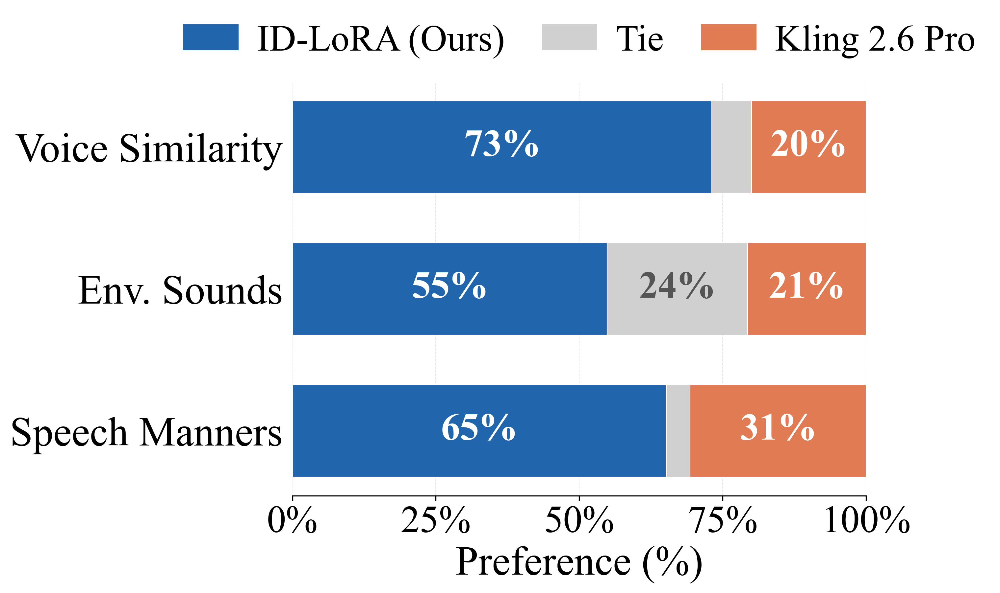
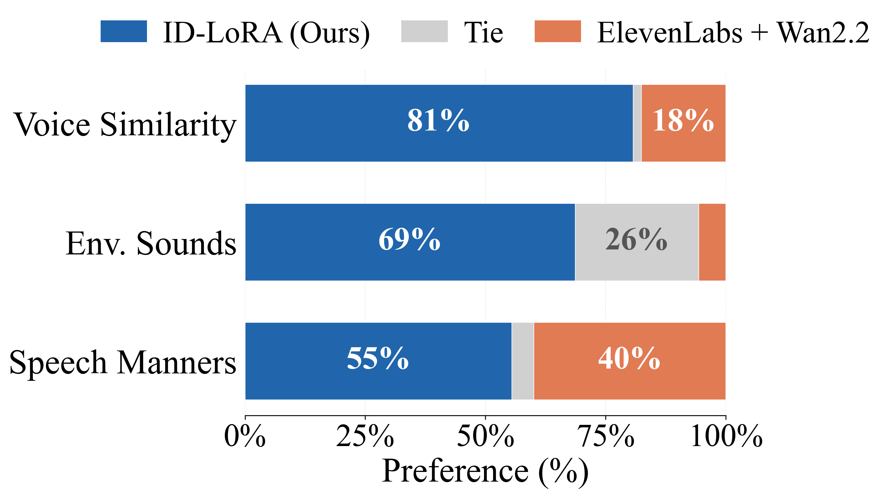
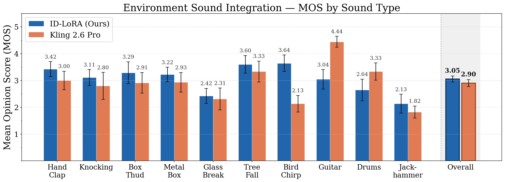
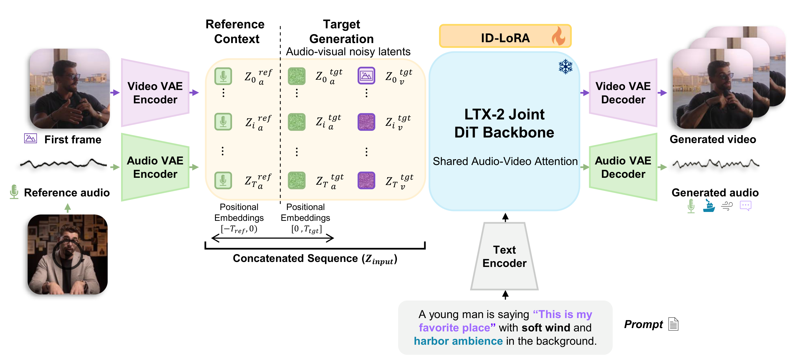

Identity-Driven Audio-Video Personalization with In-Context LoRA
Generate video and audio of a specific person from a single text prompt, a reference image, and a short audio clip — all in one model.
Aviad Dahan* Moran Yanuka* Noa Kraicer Lior Wolf Raja Giryes
*Equal contribution
preferred over Kling 2.6 Pro for voice similarity
preferred over ElevenLabs v3+Wan2.2 for voice similarity
training pairs, single GPU
Each video is fully generated — placing a real identity in a new scene with physical interactions that produce sound, all from a single text prompt, a reference image, and a short audio clip.
Same prompt and reference, different methods. Click any video to play — unmute to hear the difference.
A/B preference test on Amazon Mechanical Turk (hard split — cross-video reference-target pairs).

vs. Kling 2.6 Pro. ID-LoRA is preferred 73% for voice similarity, 65% for speaking style, and 55% for environment sounds.

vs. ElevenLabs v3 + Wan2.2. ID-LoRA is preferred 81% for voice similarity, 56% for speaking style, and 69% for environment sounds.

Mean Opinion Scores. ID-LoRA achieves an overall MOS of 3.05 vs. 2.90 for Kling 2.6 Pro, winning on 8 of 10 physical interaction scenarios.
Existing video personalization methods preserve visual likeness but treat video and audio separately. Without access to the visual scene, audio models cannot synchronize sounds with on-screen actions; and because classical voice-cloning models condition only on a reference recording, a text prompt cannot redirect speaking style or acoustic environment. Although prompt-conditioned audio models could offer such control, they lack access to the visual scene.
We propose ID-LoRA (Identity-Driven In-Context LoRA), which jointly generates a subject's appearance and voice in a single model, letting a text prompt, a reference image, and a short audio clip govern both modalities together. ID-LoRA adapts the LTX-2 joint audio-video diffusion backbone via parameter-efficient In-Context LoRA and, to our knowledge, is the first method to personalize visual appearance and voice within a single generative pass. Two challenges arise from this formulation. Reference and generation tokens share the same positional-encoding space, making them hard to distinguish; we address this with negative temporal positions, which place reference tokens in a disjoint region of the RoPE space while preserving their internal temporal structure. Furthermore, speaker characteristics tend to be diluted during denoising; we introduce identity guidance, a classifier-free guidance variant that amplifies speaker-specific features by contrasting predictions with and without the reference signal.
In human preference studies ID-LoRA is preferred over Kling 2.6 Pro, the leading commercial unified model with voice personalization capabilities, by 73% of annotators for voice similarity and 65% for speaking style. Automatic metrics confirm these gains: on cross-environment settings, speaker similarity improves by 24% over Kling, with the gap widening as reference and target conditions diverge. ID-LoRA achieves these results with only approximately 3K training pairs on a single GPU.

Architecture overview. ID-LoRA adapts the LTX-2 dual-stream DiT via In-Context LoRA. A reference audio clip is encoded and concatenated with noisy target latents, while the video stream uses standard text-to-video generation with first-frame conditioning.
Reference audio is encoded into latents and concatenated with noisy target audio along the sequence dimension. The model learns to extract speaker identity from the reference during denoising.
Reference tokens receive negative RoPE positions [-T, 0), while target tokens occupy [0, T]. This cleanly separates reference from target in attention while preserving temporal structure.
A CFG variant that amplifies speaker-specific features by extrapolating between predictions with and without the reference signal. Scale 4.0 yields a +9% speaker similarity improvement.
Comparison across three evaluation splits. Best in bold per column.
Cross-video reference-target pairs where reference and target environments differ.
| Method | Spk Sim ↑ | Face Sim ↑ | LSE-D ↓ | LSE-C ↑ | CLAP ↑ | WER ↓ |
|---|---|---|---|---|---|---|
| ID-LoRA (Ours) | 0.477 | 0.874 | 8.49 | 3.90 | 0.363 | 0.113 |
| Kling 2.6 Pro | 0.385 | 0.854 | 9.49 | 3.47 | 0.316 | 0.121 |
| CosyVoice 3.0 + Wan2.2 | 0.391 | 0.890 | 11.40 | 1.50 | 0.249 | 0.362 |
| VoiceCraft + Wan2.2 | 0.344 | 0.892 | 10.60 | 1.33 | 0.258 | 0.427 |
| ElevenLabs v3 + Wan2.2 | 0.357 | 0.894 | 11.86 | 1.72 | 0.238 | 0.154 |
24% speaker similarity improvement over Kling 2.6 Pro on the hard split, where reference and target environments diverge. The gap widens on harder cross-environment settings — demonstrating the advantage of unified generation over cascaded pipelines. ID-LoRA also leads in lip synchronization (LSE-D/C) and audio prompt adherence (CLAP).
@misc{dahan2026idloraidentitydrivenaudiovideopersonalization,
title = {ID-LoRA: Identity-Driven Audio-Video Personalization
with In-Context LoRA},
author = {Aviad Dahan and Moran Yanuka and Noa Kraicer and Lior Wolf and Raja Giryes},
year = {2026},
eprint = {2603.10256},
archivePrefix = {arXiv},
primaryClass = {cs.SD},
url = {https://arxiv.org/abs/2603.10256}
}